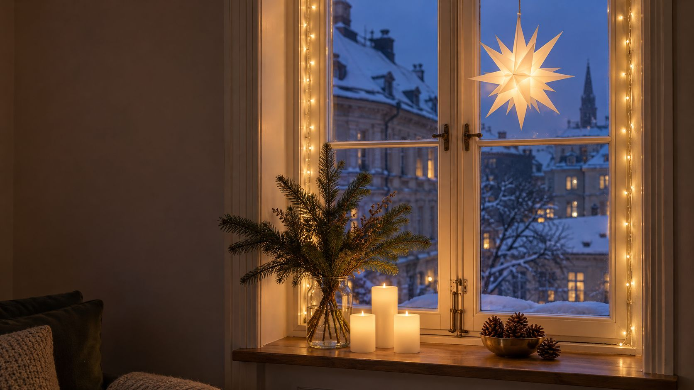
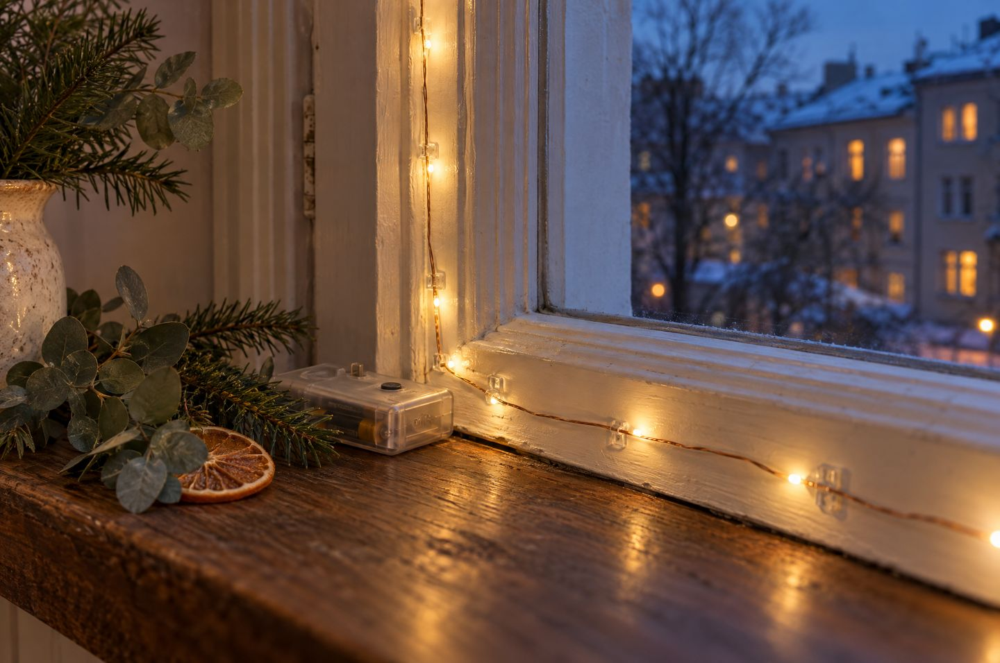

Fensterdeko zu Weihnachten: Lichterkette, Sterne und Fensterbank
Das Fenster ist die Bühne für den Advent, von innen und von der Straße aus. Hier steht, wie lang die Lichterkette sein muss, wohin der Stern gehört und was zur Miete erlaubt ist.
Für eine Lichterkette rund um das Fenster rechnest du zweimal Breite plus zweimal Höhe und gibst den Weg bis zur Steckdose dazu. Draußen braucht eine Lichterkette mindestens die Schutzart IP44, das CE-Zeichen allein sagt laut VDE nichts über die Sicherheit. Innen im Fenster darfst du als Mieter dekorieren, an der Fassade brauchst du die Erlaubnis des Vermieters.
Die wichtigsten Zahlen.
Vier Werte, mit denen die Fensterdeko gut aussieht und sicher bleibt.
Der Fenster-Planer.
Miss die Breite und Höhe der Glasfläche oder des Rahmens, an dem die Lichter hängen sollen. Der Planer zeigt, wie lang die Lichterkette sein muss und wie viele Haken du brauchst.
Unsere Planungswerte: ein Haken alle 30 cm, beim Bogen 20 Prozent Zugabe für den Durchhang, beim Lichtervorhang etwa 10 cm Abstand zwischen den Strängen. Kauf die Kette lieber etwas länger, ein Rest lässt sich auf der Fensterbank in ein Glas legen.
Ideen fürs Fenster.
Wenige Dinge, dafür gut platziert. Von draußen zählt das Licht, von drinnen die Fensterbank.
Ein Stern als Blickfang
Ein Papierstern oder ein Stern aus Holz hängt mittig im oberen Drittel des Fensters. So sieht man ihn von der Straße aus, und er verdeckt den Blick nach draußen nicht. Bei mehreren Fenstern in einer Reihe: überall auf derselben Höhe.
Licht rund um den Rahmen
Eine dünne Drahtlichterkette entlang des Rahmens zeichnet das Fenster nach, ohne aufzufallen. Warmweiß um 2.700 Kelvin wirkt ruhig, bunte und blinkende Lichter wirken schnell unruhig.
Lichtervorhang für große Fenster
Viele senkrechte Stränge an einer Leiste oben füllen bodentiefe Fenster und Balkontüren. Achte darauf, dass das Fenster noch aufgeht: Häng den Vorhang an den Flügel, nicht davor.
Die Fensterbank als kleine Bühne
Zweige in einer Vase, zwei bis drei Kerzen in verschiedenen Höhen und eine Schale mit Zapfen reichen. Auf schmalen Fensterbänken lieber LED-Kerzen, vor allem, wenn ein Vorhang in der Nähe hängt.
Schwibbogen oder Lichterbogen
Der Lichterbogen aus dem Erzgebirge steht traditionell im Fenster. Er braucht eine Fensterbank, die etwas tiefer ist als sein Fuß, und eine Steckdose in der Nähe, oder er läuft mit Batterie.
Fensterbilder, die wieder abgehen
Sterne aus Transparent- oder Butterbrotpapier halten mit durchsichtigem Klebeband oder an einer Schnur. Wer aufs Glas malt, nimmt Farben, die nicht dauerhaft halten, und probiert sie vorher in einer Ecke aus.

Sicher leuchten.
Was der VDE zur Weihnachtsbeleuchtung rät, und was am Fenster dazukommt.
- Prüfzeichen: Achte auf das Zeichen eines unabhängigen Prüfinstituts, etwa VDE oder GS. Das CE-Zeichen bestätigt der Hersteller nur selbst, es sagt laut VDE nichts über die Sicherheit.
- Drinnen oder draußen: Ketten mit dem Haus-Symbol sind nur für innen. Draußen auf dem Balkon oder außen am Fenster braucht die Kette mindestens IP44 (spritzwassergeschützt), und auch Stecker und Verlängerung müssen für draußen gemacht sein.
- LED statt Glühlampe: LEDs brauchen viel weniger Strom und werden kaum warm. Das ist am Fenster mit Vorhang und Papiersternen ein Vorteil.
- Nicht unbeobachtet: Lichterketten nicht die ganze Nacht laufen lassen. Eine Zeitschaltuhr oder eine Kette mit Timer schaltet sie von selbst ab.
- Kabel nicht quetschen: Führ kein Netzkabel durch ein geschlossenes Fenster oder eine Balkontür. Für draußen lieber eine Kette mit Batterie oder eine Außensteckdose.
- Kinderzimmer: Dort nur Ketten mit Kleinspannung bis 24 Volt oder mit Batterie.
Was die Beleuchtung an Strom kostet, rechnet unsere Schwesterseite aus. Wie du Vorhänge klug hängst, steht im Ratgeber Vorhänge aufhängen.
Fensterdeko zur Miete.
In der eigenen Wohnung darfst du fast alles. Ärger gibt es meist erst außen und im Treppenhaus.
| Wo | Was gilt |
|---|---|
| Innen im Fenster | Erlaubt. Das Landgericht Berlin bezweifelte, dass eine Lichterkette im Fenster überhaupt eine Pflichtverletzung ist (Urteil vom 1.6.2010, 65 S 390/09). |
| Grelles Blinken | Sehr helle, bunte oder blinkende Lichter können Nachbarn stören. Rücksicht hilft: abends rechtzeitig ausschalten, zum Beispiel mit Timer um 22 Uhr. |
| Fassade | Vorher den Vermieter fragen, nicht nur, wenn gebohrt werden muss. Alles muss sturmfest sitzen. |
| Treppenhaus | Deko gehört an die eigene Wohnungstür, nicht in den gemeinsamen Flur (Amtsgericht Münster, 31.7.2008, 38 C 1858/08). |
Das ist keine Rechtsberatung. Mehr zum Wohnen ohne Bohren im Ratgeber Schöner wohnen zur Miete.
Checkliste fürs Fenster.
Hak ab, was erledigt ist. Der Stand bleibt nur in deinem Browser.
Für dein Fenster.
Ideen zum Stöbern. Die Links führen zu einer Suche bei AmazonAnzeige
Häufige Fragen.
Wie lang muss eine Lichterkette fürs Fenster sein?
Für eine Kette rund um das Fenster rechnest du zweimal Breite plus zweimal Höhe. Bei 120 mal 150 cm sind das 5,40 m leuchtende Länge. Dazu kommt das Stück bis zur Steckdose.
Wo hängt der Stern im Fenster am schönsten?
Mittig im oberen Drittel. Dann sieht man ihn von draußen gut, und er versperrt den Blick nicht. Bei mehreren Fenstern hängen alle Sterne auf derselben Höhe.
Welche Lichterkette darf nach draußen?
Nur eine Kette für außen mit mindestens IP44. Ketten mit dem Haus-Symbol sind nur für innen. Auch Stecker und Verlängerungskabel müssen für draußen geeignet sein.
Darf ich als Mieter eine Lichterkette ins Fenster hängen?
Ja, innen im Fenster ist das in aller Regel erlaubt. Für Deko an der Fassade fragst du vorher den Vermieter. Grell blinkende Lichter können Nachbarn stören, ein Timer am Abend hilft.
Wie befestige ich Deko am Fenster ohne Bohren?
Mit durchsichtigen Klebehaken, die sich rückstandslos lösen, mit einer Spannstange im Rahmen oder mit Saugnäpfen am Glas. Papiersterne hängen an einer Schnur.
Ist das CE-Zeichen ein Prüfsiegel?
Nein. Mit dem CE-Zeichen bestätigt der Hersteller selbst, dass er die Regeln einhält. Ein Zeichen wie VDE oder GS stammt von einem unabhängigen Prüfinstitut.
Quellen.
Alle 3 Quellen anzeigenVDE · Legal Tribune Online · OBI Magazin
- VDEvde.comWeihnachtsbeleuchtung, sicher durch die Adventszeit; Prüfzeichen, CE-Kennzeichen, IP44 für außen, Haus-Symbol, LED, Kleinspannung bis 24 V im Kinderzimmer (Stand 24.11.2025)
- Legal Tribune Onlinelto.deWeihnachtsdeko am Mietshaus; LG Berlin 65 S 390/09, AG Münster 38 C 1858/08, Fassade nur mit Erlaubnis (20.12.2011)
- OBI Magazinobi.deFensterbilder für Weihnachten; Tonpapier, Transparent- oder Butterbrotpapier, Klebestreifen oder Schnur, nicht dauerhafte Fensterfarbe (06.12.2023)
Geprüft am 25.11.2026. Ein Haken alle 30 cm, 20 Prozent Durchhang beim Bogen, 10 cm Strangabstand beim Vorhang und die Lage des Sterns im oberen Drittel sind unsere eigenen Planungswerte.